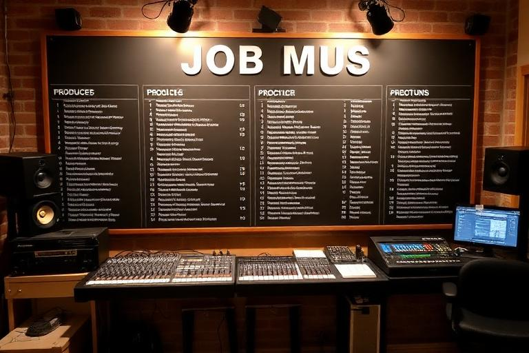

Career guide
Careers, Jobs & Education
RockMundo is built around music, but your character does not have to be only a musician. Employment can stabilise early finances, education can develop new capabilities and specialist careers can become meaningful long-term identities of their own.

In brief
Use jobs for stability, choose education that supports a real goal, and only build a specialist career when you are willing to give it schedule space. The best side career is the one that fits the character you want to play—not simply the highest visible wage.
Employment and regular jobs
Jobs give characters a dependable way to earn money and participate in the wider economy. They are particularly useful early on, when performances and releases may not yet pay enough to cover travel, equipment and music development.
Income
Reliable wages can fund the less predictable early stages of a music career.
Schedule
Work is not free money: shifts and commitments occupy time that may compete with gigs, travel and rehearsal.
Fit
A job that leaves useful space for your band can be better than a higher-paying role that constantly creates conflicts.
Progression
Some career routes reward relevant skills and experience rather than remaining a flat source of income forever.
Education and learning
Education should answer a question: what do I want this character to become better at? A course, lesson or tutor is most useful when it supports an instrument, creative skill or career path you intend to use.
- Check prerequisites before committing to a progression route.
- Make sure the learning schedule works around important band dates.
- Compare the cost and time of different learning methods.
- Do not collect qualifications or skills with no connection to your actual play style.
Specialist careers
RockMundo includes careers beyond ordinary employment. Depending on the systems available to your character, you may be able to develop paths such as teaching, producing, public relations, acting, modelling, clothing design and other professional roles.


Offers and opportunities
Some career activity arrives as an offer rather than a permanent job. Always check the date, location, requirements and your existing schedule before accepting.
Balancing a job with music
- Protect anchor music dates. Gigs, tours, recordings and rehearsals should be visible before you add optional work.
- Keep enough income. Do not quit stable work simply because one gig paid well.
- Reduce commitments as music grows. A stronger music career can justify reclaiming time from ordinary employment.
- Use careers that reinforce identity. A producer, teacher or media-focused musician can build a different story from a character treating work only as cash generation.